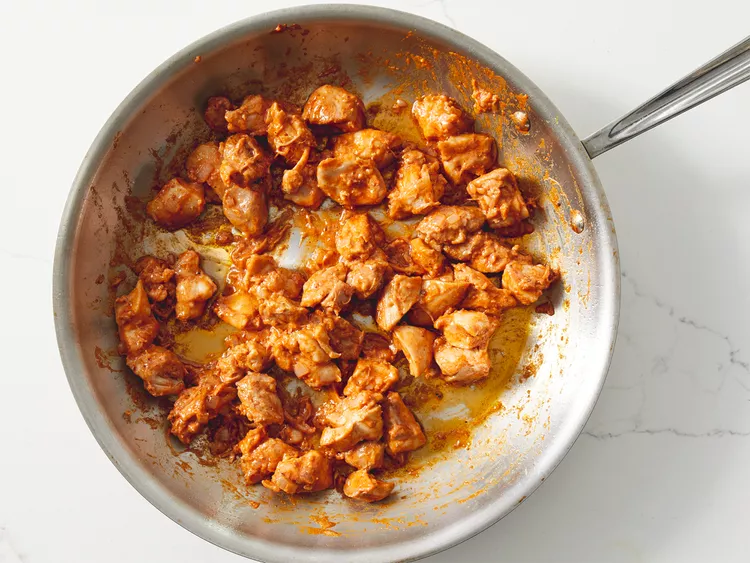

Chicken Makhani (Indian Butter Chicken)

Prep Time: 10 mins
Cook Time: 25 mins
Total Time: 35 mins
Servings: 4
Description:
Chicken makhani, more commonly known as butter chicken, is a rich and creamy North Indian dish that originated in Delhi in the mid-20th century. It is made with marinated pieces of chicken—often cooked in a tandoor—that are simmered in a smooth tomato-based sauce enriched with butter, cream, and aromatic spices like garam masala, cumin, and coriander. The result is a mildly spiced curry with a velvety texture and a balance of savory, tangy, and slightly sweet flavors.
This dish is widely celebrated for its versatility and appeal, often served with naan, roti, or steamed basmati rice. While traditional recipes use charcoal or clay oven cooking for the chicken, modern versions adapt to stovetops or ovens without losing the signature taste. Chicken makhani has become a global favorite, appearing on menus far beyond India, prized for its comforting, indulgent character and ability to satisfy both spice lovers and those who prefer milder curries.
Ingredients:
- 2 tablespoons peanut oil, divided
- 1 shallot, finely chopped
- 1/4 white onion, chopped
- 2 tablespoons butter
- 1 tablespoon ginger garlic paste
- 2 teaspoons lemon juice
- 2 teaspoons garam masala, divided
- 1 teaspoon chili powder
- 1 teaspoon ground cumin
- 1 bay leaf
- 1 cup tomato puree
- 1 cup half-and-half
- 1/4 cup plain yogurt
- 1 pinch salt and ground black pepper to taste
- 1 pound boneless, skinless chicken tights, cut into bite-size pieces
- 1/4 teaspoon cayenne pepper, or to taste
- 1 tablespoon cornstach
- 1/4 cup water
Directions:
- Heat 1 tablespoon oil in a large saucepan over medium-high heat. Sauté shallot and onion until soft and translucent, about 5 minutes.

- Stir in butter, ginger-garlic paste, lemon juice, 1 teaspoon garam masala, chili powder, cumin, and bay leaf. Cook and stir for 1 minute. Add tomato sauce, and cook for 2 minutes, continuing to frequently stir. Stir in butter, ginger-garlic paste, lemon juice, 1 teaspoon garam masala, chili powder, cumin, and bay leaf. Cook and stir for 1 minute. Add tomato sauce, and cook for 2 minutes, continuing to frequently stir.

- Stir in half-and-half and yogurt. Reduce heat to low, and simmer for 10 minutes, frequently stirring. Season with salt and pepper. Remove from heat and set aside.

- Heat remaining 1 tablespoon oil in a large heavy skillet over medium heat. Cook chicken until lightly browned, about 10 minutes.

- Reduce heat, and season with remaining 1 teaspoon garam masala and cayenne. Stir in a few spoonfuls of sauce, and simmer until liquid has reduced, and chicken is no longer pink. Add cooked chicken into sauce and stir together.

- Dissolve cornstarch into water, then mix into the sauce. Cook for 5 to 10 minutes, or until thickened.

- Serve over rice with naan.

Home